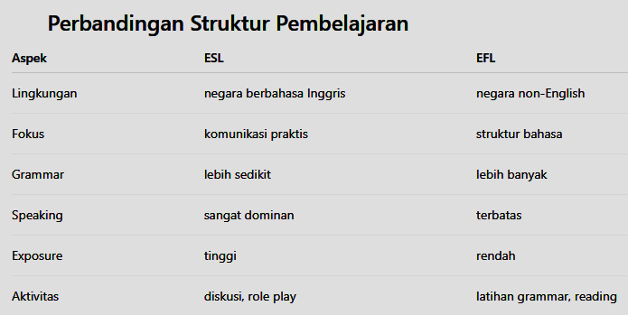

Belajar English jadi lebih mudah, komunikatif, dan menyenangkan. Metode modern yang membuat siswa lebih percaya diri berbicara.
Chat WhatsApp SekarangDengan pengalaman mengajar ESL di ILP dan EFL di LIA selama total 16 tahun (2008–2024), kiranya perlu dijelaskan terlebih dahulu perbedaan antara English as a Second Language (ESL) dan English as a Foreign Language (EFL).
Contoh aktivitas:
-role play
-diskusi
-interview
-presentasi
Karena siswa langsung hidup di lingkungan English (exposed), kelas lebih fokus komunikasi praktis.
Contoh aktivitas:
-grammar exercise
-translation
-reading comprehension
-writing paragraph
Karena lingkungan tidak mendukung English (unexposed), kelas harus menyediakan struktur pembelajaran yang lebih lengkap.

Untuk pembelajaran les privat, metode EFL communicative approach biasanya jauh lebih efektif dibanding metode grammar tradisional.
Pendekatan ini masih termasuk dalam kerangka English as a Foreign Language (EFL), tetapi fokusnya dibuat lebih praktis dan komunikatif,
walaupun siswa tinggal di negara yang tidak memakai English sehari-hari.
Berikut struktur pembelajaran yang dipakai dalam les privat dengan metode EFL communicative approach:
Siswa langsung menggunakan English sejak awal.
Contoh:
-“How was your day today?”
-“What did you do at school?”
-“What game did you play yesterday?”
Ini membantu siswa berpikir dalam English, bukan hanya menghafal grammar.
Kosakata baru diperkenalkan sesuai topik.
Contoh topik: Food
Vocabulary:
-restaurant
-order
-menu
-drink
-dessert
Belajar grammar melalui pola kalimat.
Contoh:
-I want to order ______
Can I have ______ ?
Siswa tinggal mengganti isi kalimat.
Ini membuat grammar dipelajari secara natural.
Latihan dengan bantuan tutor.
Contoh:
Tutor:
“What do you want to order?”
Student:
“I want to order pizza.”
Tutor bisa menambahkan variasi:
“What drink do you want?”
“Do you want dessert?”
Role play dan dialog situasi nyata. Bagian ini yang paling penting dalam metode modern.
Contoh aktivitas:
Role Play
Student = customer
Tutor = waiter
Dialog:
Waiter: Hello, what would you like to order?
Customer: I want to order a burger.
Waiter: Would you like a drink?
Customer: Yes, I want orange juice.
Aktivitas seperti ini membuat siswa menggunakan bahasa untuk tujuan nyata.
Koreksi diberikan saat siswa berbicara jika dipandang perlu, bukan hanya di akhir sesi.
Contoh:
Student:
I want order pizza.
Tutor:
Good! You can say: I want to order pizza.
Kenapa Metode di atas Efektif?
Untuk siswa EFL seperti di Indonesia:
-meningkatkan speaking confidence
-siswa tidak takut salah grammar
-pembelajaran terasa lebih natural
-lebih cocok untuk les privat
Belajar Bahasa Inggris jadi lebih mudah dan menyenangkan, untuk siswa SD - SMP - SMA
Materi yang dipelajari:
-Grammar mudah dipahami
-Speaking Practice
-Reading & Writing
-Bantuan PR & persiapan ujian (untuk kelas 1 on 1 / Lesson by request)
Cocok untuk siswa yang ingin:
-meningkatkan nilai Bahasa Inggris
-lebih percaya diri berbicara
-memahami grammar dengan jelas
Pembayaran: Cash per sesi / Cash per 10 sesi di muka
Jadwal: Mulai pukul 14.00 siang, berdasarkan kesepakatan waktu bersama (fleksibel)
Jika tertarik untuk belajar coding Scratch, juga disediakan les privat 1 on 1.
Silahkan klik untuk Preview